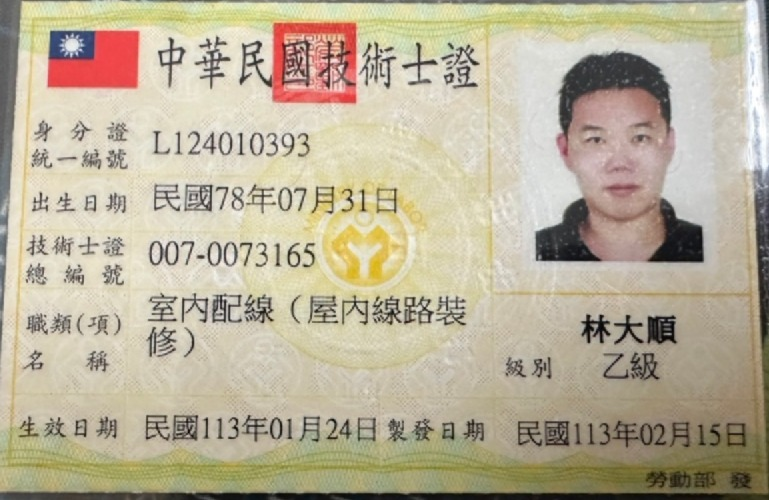
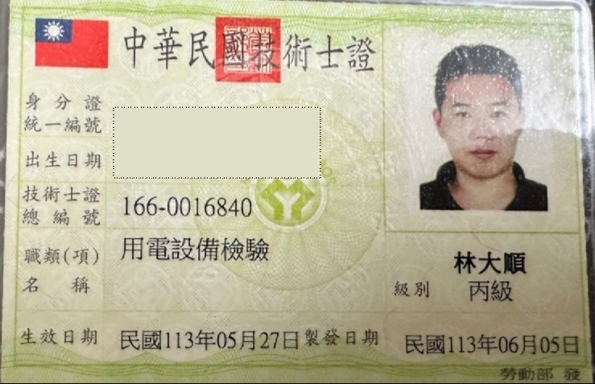
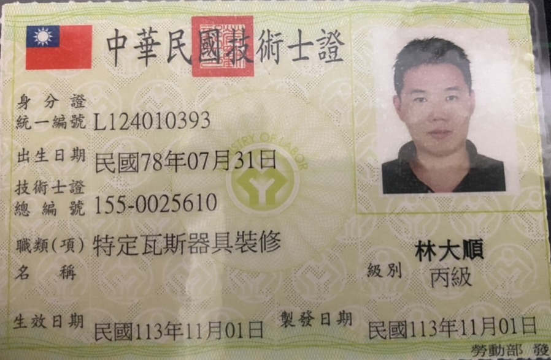
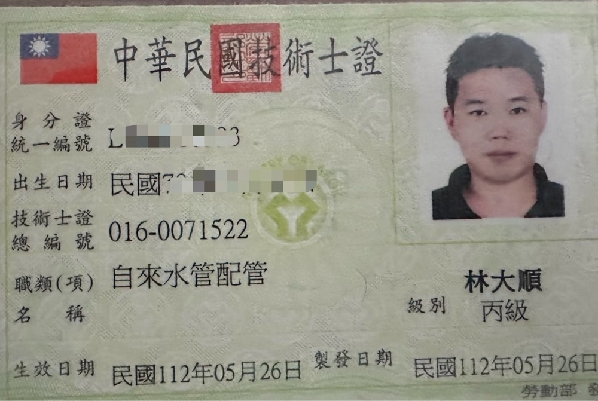
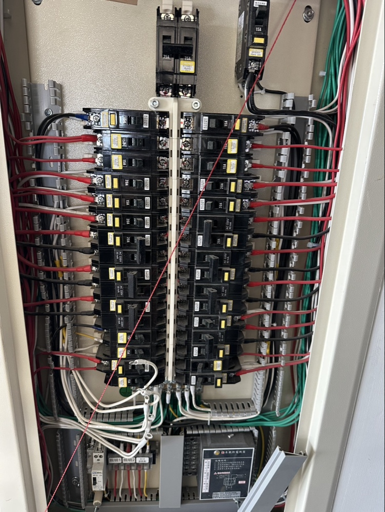
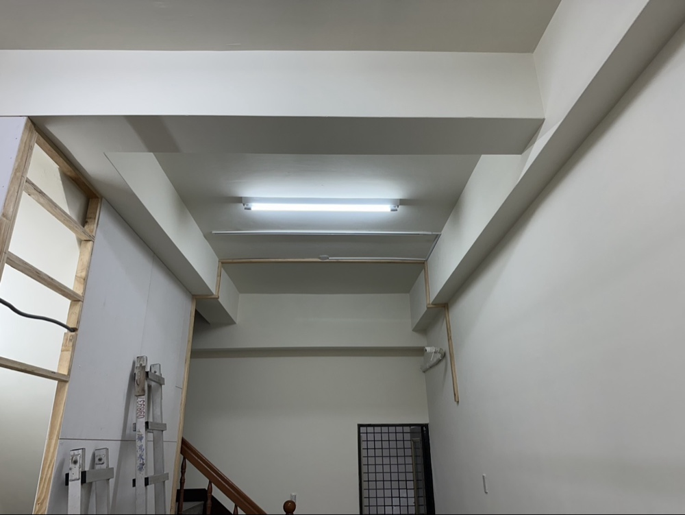
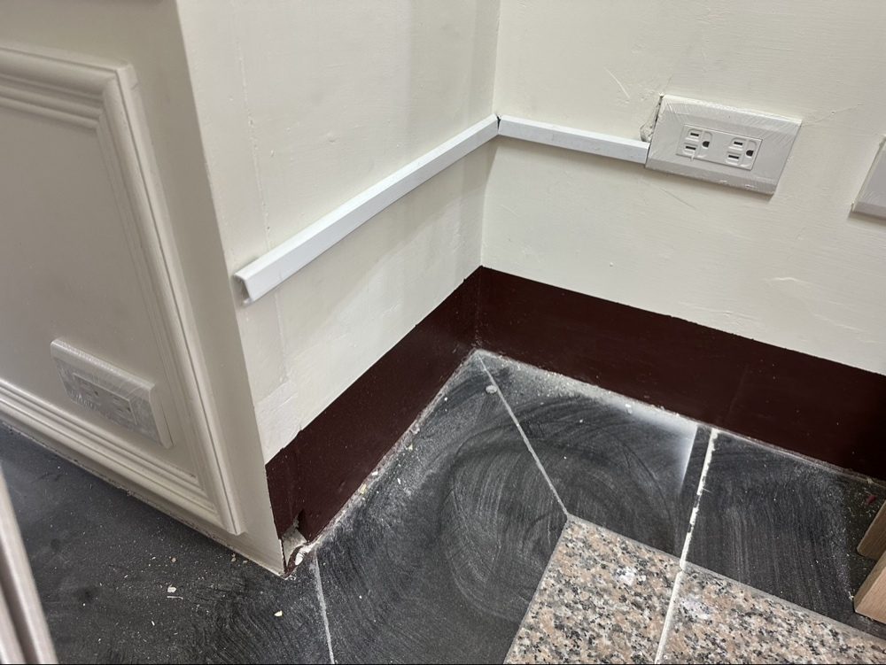
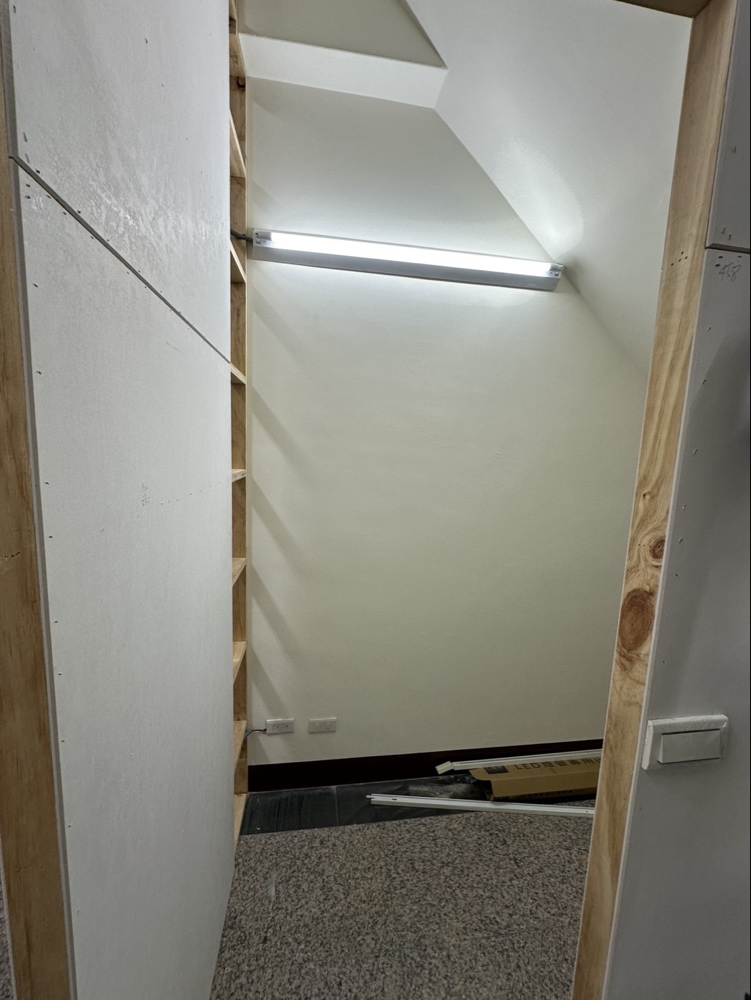

Q：平日晚上或半夜跳電漏水，真的可以打電話嗎？
A：是的！廣禹工程提供台中24H緊急救援服務。不論西屯、北屯、南區，只要有突發狀況，請直接撥打0981-989-600。

室內配線乙級

用電設備檢驗丙級

瓦斯器具裝修

自來水管配管丙級
從強電配箱到弱電網路、監視系統，一站式整合規劃
改善市區老舊配電箱，安全系數升級

新成屋網路佈線、店面監控系統架設查修
招牌燈光與戶外電力配置
高功率設備專用迴路配置

樓梯間自動感應燈具安裝

轉角處細緻收邊，不破壞裝潢
使用合格耐燃材質，安全第一

柔和光源配置
施工前必先報價，您同意後才動工，絕不事後加價
| 服務項目 | 參考價格 | 服務說明 |
|---|---|---|
| 台中 24H 緊急救援出工 | $1,000 - $2,500 | 深夜、假日緊急搶修基本出勤費 (視市區距離與時段調整) |
| 漏水 / 爆管檢測 | $800 起 | 包含基本檢測，如需更換零件材料費另計 |
| 監視器 / 網路工程 | 現場場勘報價 | 居家/店面監控系統安裝、網路硬體架設、線路整理 |
| 插座 / 開關更換 | $200 - $500 / 處 | 基本工資另計，量大可優惠 |
| 加壓馬達安裝 | $3,500 起 | 視馬達規格(傳統/變頻)與現場管路難度 |
| 衛浴設備安裝 | $1,500 起 | 馬桶、面盆、花灑安裝 (不含設備本體) |
| 全屋配線 / 舊宅翻修 | 免費現場勘查 | 林老闆親自到府規劃，提供正式報價單 |
* 以上價格為參考行情，最終報價以現場老闆評估實際狀況為準。
A：是的！廣禹工程提供台中24H緊急救援服務。不論西屯、北屯、南區，只要有突發狀況，請直接撥打0981-989-600。
A：有的！我們提供專業台中弱電工程服務，包含居家/店面監視器安裝、網路硬體架設、線路整理，並幫您設定好手機 App 遠端查看。
A：沒問題！市區有許多屋齡較高的住宅，我們會進行完整的用電負載測試，並檢查配電箱是否老舊氧化，確保您的用電安全。
A：台中市全區皆有服務！主打西屯、北屯、南屯、中區、東區、南區、西區、北區，海線與山線亦可到府維修。